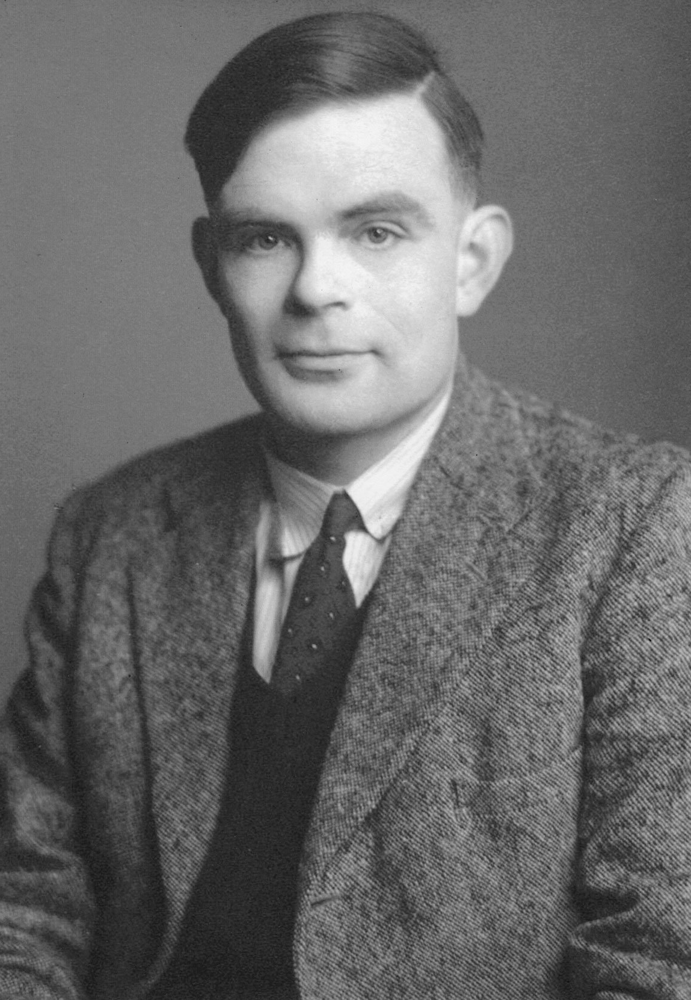
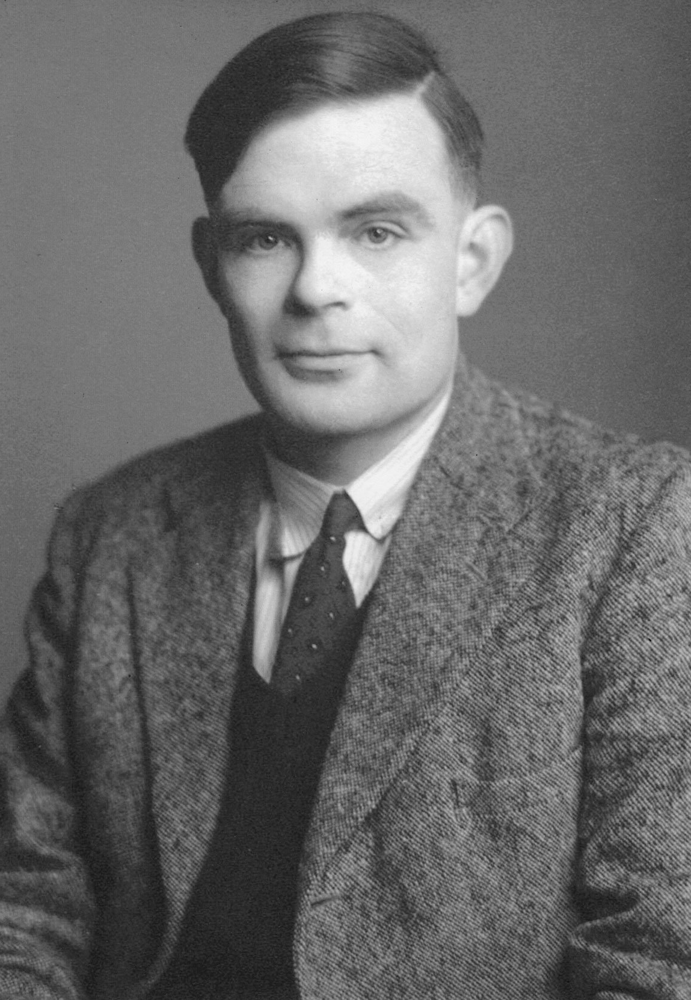

Alan Turing is a British mathematician and logician who made
many contributions to cryptanalysis, logic, philosophy, mathematics,
and mathematical biology
(later named computer science, cognitive science, artificial intelligence, and artificiallife.)

 

The left photo is Alan at age 16,
the center photo is Alan in the 1930s,
and the last photo is Alan at age 39.